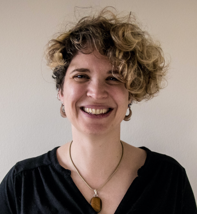
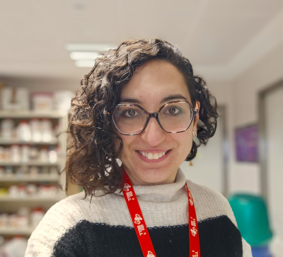
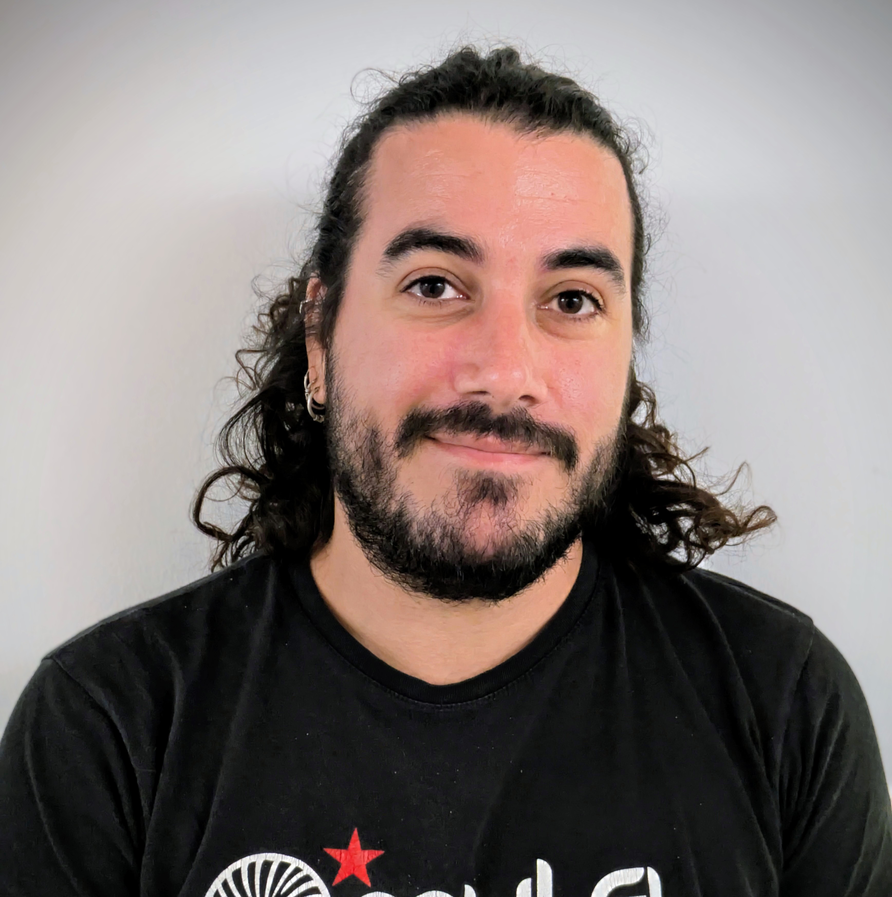
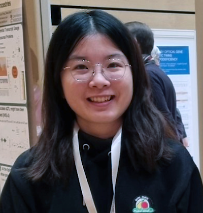
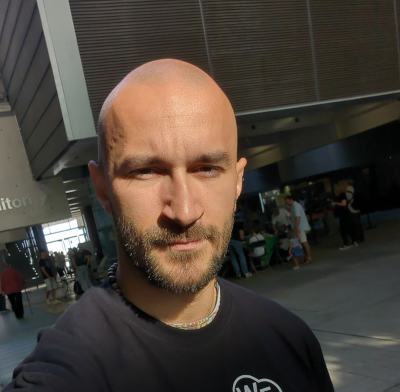
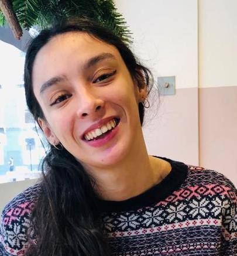
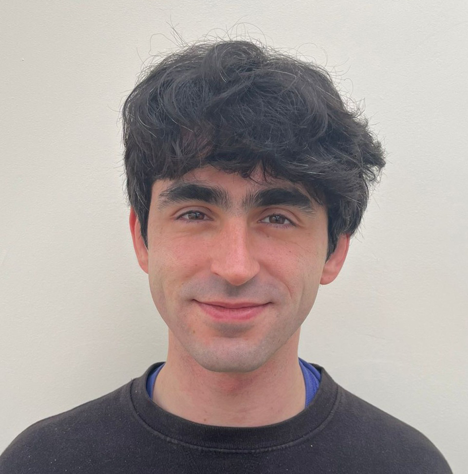
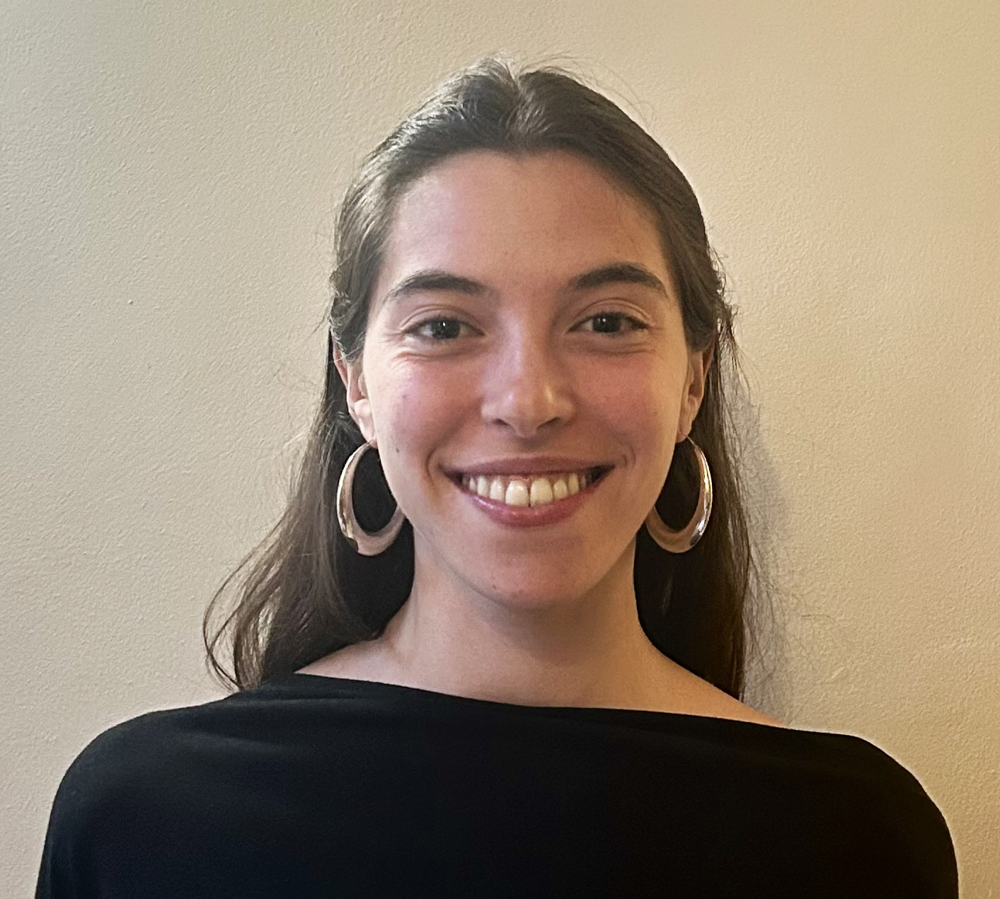

Members

Dr. Mireya Plass is a human biologist with a PhD in Bioinformatics. She is interested in understanding how post-transcriptional regulatory mechanisms shape gene expression from an evolutionary and systems biology perspective. As an independent group leader, she wants to investigate the function of post-transcriptional regulation in gene expression and cell differentiation at the single-cell level and in particular its contribution to the development of neurodevelopmental and neurodegenerative diseases.

Dr. Ana Gutiérrez is the lab manager and provides support to all members of the group. She supervises experimental procedures, establishes new protocols and is responsible for management tasks. She has experience in cell culture, single-cell encapsulation, library preparation, and has a strong background in neuroscience and neurodegenerative diseases.
Akshay J Ganesh graduated from IISER Thiruvananthapuram with a BSMS in Biology and a Minor in Physics. His master’s dissertation on RNASeq data analysis of hematopoietic stem cell differentiation led to a focus on gene regulatory networks and diseases. Currently a PhD student at the Gene Regulation of Cell Identity Lab, he analyzes single-cell transcriptomics to understand gene regulatory cascades in neurogenesis and neurodegenerative diseases.

Dr. Joan Casamitjana holds a PhD from the University of Edinburgh. He is an expert in 2D/3D cell culture, histology, complex imaging and image analysis, flow cytometry and molecular biology. He has a strong background in niche biology and is passioned about regenerative medicine.

Hui Chen is a PhD student in Bioinformatics jointly supervised by Dr. Mireya Plass from the University of Barcelona (UB) and Dr. Lei Li from Shenzhen Bay Laboratory. Her research focuses on human genetic variation and its effects on cellular functions linked to human complex diseases. Hui's work centers on exploring molecular quantitative trait loci (QTLs), with a particular emphasis on the genetic regulation of post-transcriptional processes, such as alternative polyadenylation, aiming at providing mechanistic insights that complement findings from genome-wide association studies.

I am a postdoctoral researcher interested in unusual forms of splicing including alternative polyadenylation. In particular, I am passionate about tissue specificity of such events and how those relate to human diseases. I find inspiration for my work while traveling the world, turning new environments into idea incubators. Outside the lab, I enjoy the challenge of rock climbing, the balance of yoga, and the creativity of cooking.

Chiara Zambianchi holds an integrated Master of Science in Cell Biology from University College London and a Master’s degree in Bioinformatics and SyStems Biology from the University of Amsterdam. She is currently a bioinformatician in the Plass laboratory, providing computational data analysis support for single-cell and transcriptomic datasets in neurodegeneration research. Her work focuses on Applying and optimising computational pipelines, such as SCALPEL, to investigate the role of glial cells in neurodegeneration, particularly in Alzheimer's disease.

Alfred Held is a bachelor stude nt in Biochemistry at Universitat de Barcelona, currently doing his Bachelor's Thesis project in bioinformatics. He is analyzing bulk transcriptomics data to describe the ways in which RNA binding proteins transport mRNA in neurons. He is passionate about niche mechanisms in genetics and wants to broaden his skill set as a bioinformatician.

Júlia Pujol is a bachelor’s student in Biology at the Universitat de Barcelona, currently carrying out her Bachelor’s Thesis Project with the Plass Group at UB. She is working, along with Ana and Joan, on the development of a cellular model to obtain cells with an aged phenotype for further study of Alzheimer’s disease. Through this project, she is gaining experience in experimental science techniques, particularly in the field of cell culture and related laboratory methodologies.
Mariona Risquez Martí is a Master’s student in Biomedicine currently conducting her internship in Dr. Mireya Plass’s lab. She holds a degree in Genetics from the Universitat Autònoma de Barcelona. Her research focuses on establishing a robust protocol for deriving microglia from iPSCs. This work aims to implement an in vitro triculture model comprising neurons, astrocytes, and microglia to effectively recapitulate the Alzheimer’s Disease phenotype.
Pablo Donaire is a MSc Bioinformatics student with a background in Genetics and Advanced Therapies. His interests aims to uncover how genetic and epigenetic variation shapes molecular processes in aging and aging-related diseases. He currently studies APOE-associated mechanisms in Alzheimer's disease using isogenic brain organoids and integrative single-cell multi-omics.
Past Members
Nadia Jamshaid (Technician)
María Varea Martínez (Master student)
Marcel Schilling (Bioinformatician)
Franz Ake (PhD student)
María Varea Martínez (Master student)
Sandra María Fernández-Moya (Postdoctoral Researcher) – Now Lecturer at University of Málaga
Rafael Tur Guash (Research Assistant & Master Student) – Now PhD student at DZNE in Dresden
Natalie Chaves Ferreira (Technician)
Mohamed N. Hassan (Graduate student) – Now PhD student at Aarhus University
Katharina Schlick (Erasmus Master Student) – Now Technician at Medical University of Vienna
Nicole Grieger (Erasmus+ visiting technician) – Now Technician at MDC Berlin
Husain Managori (Graduate student)